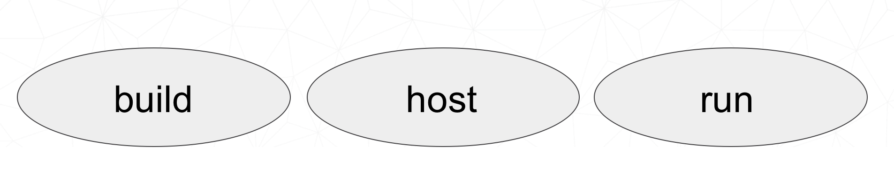

The Joy of Packaging¶
Scipy 2018 Tutorial¶
Instructors¶
Michael Sarahan, Matt McCormick, Jean-Christophe Fillion-Robin, Filipe Fernandes Matt Craig, Chris Barker, Ray Donnelly, Jonathan Helmus
What is a “package”?¶
In a broad sense, anything you install using your package manager
some kinds of packages have implied behavior and requirements
Unfortunate overloading: python “package”: a folder that python imports
Package Managers and Repos¶
NPM, apt, yum, dnf, chocolatey, pip, conda, homebrew, etc.
PyPI, anaconda.org, CRAN, CPAN
Some form of dependency management
Artifact and/or source repository
Implicit behavior & Requirements¶
- Folder structure
- Directly usable, or must be unpacked/installed?
Python packages¶
sound/
__init__.py
formats/
__init__.py
wavwrite.py
effects/
__init__.py
echo.py
Folders must have __init__.py file to make Python able to import them
__init__.py can be empty (and is, most of the time)
Python packages - why?¶
import nested module
import sound.effects.echo
from sound.effects import echo
from sound.effects.echo import somefunc
https://docs.python.org/3/tutorial/modules.html#packages
Let’s Make a Package¶
mypkg/
__init__.py
subpkg/
__init__.py
a.py
Windows:
mkdir mypkg/subpkg
echo. > mypkg/__init__.py
echo . > mypkg/subpkg/__init__.py
echo . > mypkg/subpkg/a.py
Mac/Linux:
mkdir -p mypkg/subpkg
touch mypkg/__init__.py
touch mypkg/subpkg/__init__.py
touch mypkg/subpkg/a.py
How Python Finds Packages¶
In python interpreter:
import sys from pprint import pprint pprint(sys.path)
sys.pathexplanation:https://stackoverflow.com/a/38403654/1170370
How to Get Things on sys.path¶
PYTHONPATHenvironment variable (fragile)- Installing packages (destination: site-packages folder)
.pthfiles insys.pathlocations
Find your site-packages folder¶
- Windows:
(install root)\Lib\site-packages - Mac/Linux:
(install root)/lib/pythonX.Y/site-packages
Installing packages¶
Installing:
python setup.py install
pip install .
Development installs:
python setup.py develop
pip install -e .
| Install | Development Install |
|---|---|
| Copies package into site-packages | Adds a .pth file to site-packages,
pointed at package source root |
| Used when creating conda packages | Used when developing software locally |
https://grahamwideman.wikispaces.com/Python-+site-package+dirs+and+.pth+files
What about setup.py?¶
#!/usr/bin/env
pythonfrom setuptools import setups
setup(name='Distutils',
version='1.0',
description='Python Distribution Utilities',
author='Greg Ward',
author_email='gward@python.net',
url='https://www.python.org/sigs/distutils-sig/', packages=['distutils', 'distutils.command'],
)
https://docs.python.org/2/distutils/setupscript.html
What Does setup.py Do?¶
- Version & package metadata
- List of packages to include
- List of other files to include
- Lists of dependencies
- Lists of extensions to be compiled
Let’s Write a setup.py¶
#!/usr/bin/env python
from setuptools import setup
setup(name='mypkg',
version='1.0',
# list folders, not files
packages=['mypkg', 'mypkg.subpkg'],
)
(remember that a “package” is a folder with a __init__.py__ file)
setuptools¶
- Separate library (ships with Python by default, though)
- Adds entry point capability
- Provides find_packages function (use with caution)
- Creates eggs by default (people spend time fighting this later in the process)
Where does setup.py go?¶
| Folder Structure | |
|---|---|
mypkg-src
setup.py
mypkg/
__init__.py
subpkg/
__init__.py
a.py
|
|
Try installing your package¶
cd mypkg-src
python setup.py install
python -c “import mypkg.subpkg.a”
Go look in your site-packages folder
Making Packages the Easy Way¶
github.com/audreyr/cookiecutter
conda install -c conda-forge cookiecutter
or
pip install cookiecutter
Let’s make a project¶
cookiecutter: https://goo.gl/Jge1g8
That’s a shortened link to:
https://github.com/conda/cookiecutter-conda-python
full_name [Full Name]: Mike Sarahan
email [Email Address]: msarahan@anaconda.com
github_username [github_username]: msarahan
repo_name [repository_name]: acon_demo
package_name [acon_demo]:
project_short_description [Short description]: acon demo
version [0.1.0]:
What did we get?¶
ls -R acon_demo
README.rst acon_demo conda.recipe setup.py tests
acon_demo/acon_demo:
__init__.py __main__.py cli.py
acon_demo/conda.recipe:
meta.yaml
acon_demo/tests:
__init__.py test_cli.py
Requirements in setup.py¶
#!/usr/bin/env python
from distutils.core import setup
setup(name='mypkg',
version='1.0',
# list folders, not files
packages=['mypkg', 'mypkg.subpkg'],
install_requires=['click'],
)
Requirements in requirements.txt¶
Common Mistake:
requirements.txtoften from pip freeze- Pinned way too tightly. OK for env creation, bad for packaging.
- Donald Stufft (PyPA): Abstract vs. Concrete dependencies
Requirements in setup.cfg (ideal)¶
[metadata]
name = my_package
version = attr:
src.VERSION
[options]
packages = find:
install_requires = click
Parseable without execution, unlike setup.py
Break time!¶
Up next: producing redistributable artifacts
Redistributable artifacts¶
- sdists
- wheels
- conda packages
- eggs (deprecated)
When/how to use an sdist¶
- Pure python (no compilation requirements)
- Or, distributing source code that must be compiled prior to usage
python setup.py sdist
Wheels vs. Conda packages¶
| Wheels | Conda packages |
|---|---|
| Employed by pip, blessed by PyPA | Foundation of Anaconda ecosystem |
| Used by any python installation | Used by conda python installations |
| Mostly specific to Python ecosystem | General purpose (any ecosystem) |
| Good mechanism for specifying range of python compatibility | Primitive support for multiple python versions (noarch) |
| Depends on static linking or other system package managers to provide core libraries | Can bundle core system-level shared libraries as packages, and resolve dependencies |
Introducing conda-build¶
Orchestrates environment creation, activation, and build/test processes
Can build conda packages and/or wheels
Separate project from conda, but very tightly integrated
Open-source, actively developed:
Let’s Use conda-build¶
conda install conda-build
Windows only:
conda install m2-patch posix
All platforms:
conda build mypkg-src
What happened?¶
- Templates filled in, recipe interpreted
- Build environment created (isolated)
- Build script run
- New files in build environment bundled into package
- Test environment created (isolated)
- Tests run on new package
- cleanup
Obtaining recipes¶
Existing recipes (best)
Skeletons from other repositories (PyPI, CRAN, CPAN, RPM)
- DIY
Anaconda Recipes¶
- Official recipes that Anaconda uses for building packages
- Since Anaconda 5.0, forked from conda-forge recipes.
- Intended to be compatible with conda-forge long-term
- Presently, ahead of conda-forge on use of conda-build 3 features
Conda-forge¶

- Numfocus-affiliated community organization made up of volunteers
- One github repository per recipe
- Fine granularity over permissions
- Heavy use of automation for building, deploying, and updating recipes
- Free builds on public CI services (TravisCI, CircleCI, Appveyor)
Skeletons¶
- Read metadata from upstream repository
- Translate that into a recipe
- Will save you some boilerplate work
- Might work out of the box (should not assume automatic, though)
conda skeleton pypi¶
conda skeleton pypi <package name on pypi>
conda skeleton pypi click
conda skeleton pypi --recursive pyinstrument
conda skeleton cran¶
conda skeleton cran <name of pkg on cran>
conda skeleton cran acs
conda skeleton cran --recursive biwt
Source Patches¶
- patch files live alongside meta.yaml
- create patches with:
-
diff-git diff-git format-patch
Exercise: let’s make a patch¶
package:
name: test-patch
version: 1.2.3
source:
url: https://zlib.net/zlib-1.2.11.tar.gz
build:
script: exit 1
Builds that fail leave their build folders in place
look in output for source tree in:
*/conda-bld/test-patch_<numbers>/workcdthere
git init
git add *
git commit -am “init”
edit file of choice
git commit -m “changing file because …”
git format-patch HEAD~1
- copy that patch back alongside meta.yaml
- modify meta.yaml to include the patch
Multiple sources¶
source:
- url: https://package1.com/a.tar.bz2
folder: stuff
- url: https://package1.com/b.tar.bz2
folder: stuff
patches:
- something.patch
- git_url: https://github.com/conda/conda-build
folder: conda-build
Build options¶
number:- version reference of recipe (as opposed to version of source code)
script:- quick build steps, avoid separate build.sh/bld.bat files
skip:- skip building recipe on some platforms
entry_points:- python code locations to create executables for
run_exports:- add dependencies to downstream consumers to ensure compatibility
Requirements¶
Requirements: build vs. host¶
- Historically, only build
- Still fine to use only build
- host introduced for cross compiling
- host also useful for separating build tools from packaging environment
If in doubt, put everything in host
- build is treated same as host for old-style recipes
(only build, no {{ compiler() }})
- packages are bundled from host env, not build env
Post-build Tests¶
- Help ensure that you didn’t make a packaging mistake
- Ideally checks that necessary shared libraries are included as dependencies
Post-build tests: dependencies¶
Describe dependencies that are required for the tests (but not for normal package usage)
test:
requires:
- pytest
Post-build tests: test files¶
| Windows | Linux / Mac |
|---|---|
run_test.pl, run_test.py, run_test.r, run_test.lua |
|
run_test.bat |
run_test.sh |
Post-build tests¶
- May have specific requirements
- May specify files that must be bundled for tests (
source_files) imports:language specific imports to try, to verify correct installationcommands:sequential shell-based commands to run (not OS-specific)
https://conda.io/docs/user-guide/tasks/build-packages/define-metadata.html#test-section
Import Tests¶
test:
imports:
- dateutil
- dateutil.rrule
- dateutil.parser
- dateutil.tz
Test commands¶
test:
commands:
- curl --version
- curl-config --features # [not win]
- curl-config --protocols # [not win]
- curl https://some.website.com
Outputs - more than one pkg per recipe¶
package:
name: some-split
version: 1.0
outputs:
- name: subpkg
- name: subpkg2
- Useful for consolidating related recipes that share (large) source
- Reduce update burden
- Reduce build time by keeping some parts of the build, while looping over other parts
- Also output different types of packages from one recipe (wheels)
https://conda.io/docs/user-guide/tasks/build-packages/define-metadata.html#outputs-section
Outputs rules¶
- list of dicts
- each list must have
nameortypekey - May use all entries from
build,requirements,test,aboutsections - May specify files to bundle either using globs or by running a script
Exercise: Split a Package¶
Curl is a library and an executable. Splitting them lets us clarify where Curl is only a build time dependency, and where it also needs to be a runtime dependency.
Starting point:
https://github.com/conda-forge/curl-feedstock/tree/master/recipe
Solution:
https://github.com/AnacondaRecipes/curl-feedstock/tree/master/recipe
About section¶

Extra section: free-for-all¶
- Used for external tools or state management
- No schema
- Conda-forge’s maintainer list
- Conda-build’s notion of whether a recipe is “final”
https://conda.io/docs/user-guide/tasks/build-packages/define-metadata.html#extra-section
Break time!¶
Advanced recipe tricks coming next
Conditional lines (selectors)¶
some_content # [some expression]
- content inside
[...]is eval’ed - namespace includes OS info, python info, and a few others
https://conda.io/docs/user-guide/tasks/build-packages/define-metadata.html#preprocessing-selectors
Exercise: Limit a Recipe to Only Linux¶
package:
name: example_skip_recipe
version: 1.0
build:
skip: True
package:
name: example_skip_recipe
version: 1.0
build:
skip: True# [not linux]
Intro to Templating with Jinja2¶
Fill in information dynamically
- git tag info
- setup.py recipe data
- centralized version numbering
- string manipulation
How does Templating Save You Time?¶
{% set version = "3.0.2" %}
package:
name: example
version: {{ version }}
source:
url: https://site/{{version}}.tgz
Jinja2 Templating in meta.yaml¶
Set variables:
{% set somevar=”someval” %}
Use variables:
{{ somevar }}
Expressions in {{ }} are roughly python
Jinja2 conditionals¶
Selectors are one line only. When you want to toggle a block, use jinja2:
{%- if foo -%}
toggled content
on many lines
{% endif %}
Exercise: use Jinja2 to reduce edits¶
package:
name: abc
version: 1.2.3
source:
url: http://my.web/abc-1.2.3.tgz
{% set version=”1.2.3” %}
package:
name: abc
version: {{ version }}
source:
url: http://w/abc-{{version}}.tgz
Variants: Jinja2 on steroids¶
Matrix specification in yaml files
somevar:
- 1.0
- 2.0
anothervar:
- 1.0
Exercise: try looping¶
meta.yaml:
package:
name: abc
version: 1.2.3
build:
skip: True # [skipvar]
conda_build_config.yaml:
skipvar:
- True
- False
meta.yaml:
package:
name: abc
version: 1.2.3
requirements:
build:
- python {{ python }}
run:
- python {{ python }}
conda_build_config.yaml:
python:
- 2.7
- 3.6
meta.yaml:
package:
name: abc
version: 1.2.3
requirements:
build:
- python
run:
- python
conda_build_config.yaml:
python:
- 2.7
- 3.6
Jinja2 functions¶
loading source data:
load_setup_py_data
load_file_regex
Dynamic Pinning:
pin_compatible
pin_subpackage
Compatibility Control:
compiler
cdt
Loading setup.py data¶
{% set setup_data = load_setup_py_data() %}
package:
name: abc
version: {{ setup_data[‘version’] }}
- Primarily a development recipe tool - release recipes specify version instead, and template source download link
- Centralizing version info is very nice - see also
versioneer,setuptools_scm,autover, and many other auto-version tools
Loading arbitrary data¶
{% set data = load_file_regex(load_file='meta.yaml',
regex_pattern='git_tag: ([\\d.]+)') %}
package:
name: conda-build-test-get-regex-data
version: {{ data.group(1) }}
- Useful when software provides version in some arbitrary file
- Primarily a development recipe tool - release recipes specify version instead, and template source download link
Dynamic pinning¶
Use in meta.yaml, generally in requirements section:
requirements:
host:
- numpy
run:
- {{ pin_compatible(‘numpy’) }}
Use in meta.yaml, generally in requirements section:
requirements:
host:
- numpy
run:
- {{ pin_compatible(‘numpy’) }}
- Pin run req based on what is present at build time
Dynamic pinning in practice¶
Used a lot with numpy:
https://github.com/AnacondaRecipes/scikit-image-feedstock/blob/master/recipe/meta.yaml
Dynamic pinning within recipes¶
Refer to other outputs within the same recipe
- When intradependencies exist
- When shared libraries are consumed by other libraries
https://github.com/AnacondaRecipes/aggregate/blob/master/clang/meta.yaml
Compilers¶
Use in meta.yaml in requirements section:
requirements:
build:
- {{ compiler(‘c’) }}
- explicitly declare language needs
- compiler packages can be actual compilers, or just activation scripts
- Compiler packages utilize run_exports to add necessary runtime dependencies automatically
Why put compilers into Conda?¶
- Explicitly declaring language needs makes reproducing packages with recipe simpler
- Binary compatibility can be versioned and tracked better
- No longer care what the host OS used to build packages is
- Can still use system compilers - just need to give conda-build information on metadata about them. Opportunity for version check enforcement.
run_exports¶
“if you build and link against library abc, you need a runtime dependency on library abc”
This is annoying to keep track of in recipes.
Upstream package “abc” (already built)
package:
name: abc
version: 1.0
build:
run_exports:
- abc 1.0.*
Downstream recipe
requirements:
host:
- abc
Downstream package
requirements:
host:
- abc 1.0 0
run:
- abc 1.0.*
- Add host or run dependencies for downstream packages that depend on upstream that specifies run_exports
- Expresses idea that “if you build and link against library abc, you need a runtime dependency on library abc”
- Simplifies version tracking
Requirements: run_exports¶

Uploading packages: anaconda.org¶
- Sign-up:
https://anaconda.org/
- Requirement:
conda install anaconda-client
- CLI: anaconda upload path-to-package
- conda-build auto-upload:
conda config --set anaconda_upload True
Uploading packages: PyPI¶
- Sign-up:
https://pypi.org/account/register/ - Twine:
pip install twine - Upload with twine to Test PyPI:
- ``twine upload –repository-url https://test.pypi.org/legacy/ dist/*
- Upload to PyPI:
twine upload dist/*
Anaconda Survey¶
https://www.surveymonkey.com/r/conda
Install
Development install
Copies package into site-packages
Adds a .pth file to site-packages, pointed at package source root
Used when creating conda packages
Used when developing software locally
Normal priority in sys.path
End of sys.path (only found if nothing else comes first)
https://grahamwideman.wikispaces.com/Python-+site-package+dirs+and+.pth+files
What about setup.py?
#!/usr/bin/env pythonfrom setuptools import setupsetup(name=’Distutils’, version=‘1.0’, description=’Python Distribution Utilities’, author=’Greg Ward’, author_email=’gward@python.net’, url=’https://www.python.org/sigs/distutils-sig/’, packages=[‘distutils’, ‘distutils.command’], )
Lists of extensions to be compiled¶
What does setup.py do?
Version & package metadata
List of packages to include
List of other files to include
Lists of dependencies
#!/usr/bin/env pythonfrom setuptools import setupsetup(name=’mypkg’, version=‘1.0’, # list folders, not files packages=[‘mypkg’, ‘mypkg.subpkg’], )¶
Let’s write setup.py
creates eggs by default (people spend time fighting this later in the process)¶
Setuptools
Separate library (ships with Python by default, though)
Adds entry point capability
provides find_packages function (use with caution)
mypkg/ __init__.py subpkg/ __init__.py a.py¶
Where does setup.py go?
mypkg-src
setup.py
New outer folder
setup.py alongside package to be installed
mypkg is what will get installed
mypkg-src is what gets linked to by develop
Go look in your site-packages folder¶
Try installing your package
cd mypkg-src
python setup.py install
python -c “import mypkg.subpkg.a”
Making packages the easy way
https://github.com/audreyr/cookiecutter
conda install -c conda-forge cookiecutter
https://github.com/conda/cookiecutter-conda-python¶
Let’s make a project
cookiecutter https://goo.gl/Jge1g8
That’s a shortened link to:
What did we get?¶
install_requires=[‘click’], )¶
Adding requirements in setup.py
#!/usr/bin/env pythonfrom distutils.core import setupsetup(name=’mypkg’, version=‘1.0’, # list folders, not files packages=[‘mypkg’, ‘mypkg.subpkg’],
Donald Stufft (PyPA): Abstract vs. Concrete dependencies¶
Requirements in requirements.txt
common mistake
requirements.txt often from pip freeze
Pinned way too tightly. OK for env creation, bad for packaging.
https://caremad.io/posts/2013/07/setup-vs-requirement/
Requirements in setup.cfg (ideal)
[metadata]name = my_packageversion = attr: src.VERSION[options]packages = find:install_requires = click
http://setuptools.readthedocs.io/en/latest/setuptools.html#configuring-setup-using-setup-cfg-files
Parseable without execution, unlike setup.py
Up next: producing redistributable artifacts¶
Break time!
Wheels vs. Conda packages¶
Wheels
Conda packages
Employed by pip, blessed by PyPA
Foundation of Anaconda ecosystem
Used by any python installation
Used by conda python installations
Mostly specific to Python ecosystem
General purpose (any ecosystem)
Good mechanism for specifying range of python compatibility
Primitive support for multiple python
versions (noarch)
Depends on static linking or other system package managers to provide core libraries
Can bundle core system-level shared libraries as packages, and resolve dependencies
Open-source, actively developedhttps://github.com/conda/conda-build¶
Introducing conda-build
Orchestrates environment creation, activation, and build/test processes
Can build conda packages and/or wheels
Separate project from conda, but very tightly integrated
cleanup¶
What happened?
templates filled in, recipe interpreted
build environment created (isolated)
build script run
new files in build environment bundled into package
test environment created (isolated)
tests run on new package
DIY¶
Obtaining recipes
Existing recipes (best)
https://github.com/AnacondaRecipes
https://github.com/conda-forge
Skeletons from other repositories (PyPI, CRAN, CPAN, RPM)
Presently, ahead of conda-forge on use of conda-build 3 features¶
AnacondaRecipes
Official recipes that Anaconda uses for building packages
Since Anaconda 5.0, forked from conda-forge recipes.
Intended to be compatible with conda-forge long-term
Free builds on public CI services (TravisCI, CircleCI, Appveyor)¶
Conda-forge
Numfocus-affiliated community organization made up of volunteers
One github repository per recipe
Fine granularity over permissions
Heavy use of automation for building, deploying, and updating recipes
Might work out of the box (should not assume automatic, though)¶
Skeletons
Read metadata from upstream repository
Translate that into a recipe
Will save you some boilerplate work
conda skeleton pypi –recursive pyinstrument¶
conda skeleton pypi
conda skeleton pypi <package name on pypi>
conda skeleton pypi click
conda skeleton cran –recursive biwt¶
conda skeleton cran
conda skeleton cran <name of pkg on cran>
conda skeleton cran acs
local path¶
Source types
url
git
hg
svn
https://conda.io/docs/user-guide/tasks/build-packages/define-metadata.html#source-section
create patches with diff, git diff, or git format-patch¶
Source patches
patch files live alongside meta.yaml
https://conda.io/docs/user-guide/tasks/build-packages/define-metadata.html#source-section
Exercise: let’s make a patch¶
package:
name: test-patch
version: 1.2.3
source:
build:
script: exit 1
https://conda.io/docs/user-guide/tasks/build-packages/define-metadata.html#source-section
Exercise: let’s make a patch¶
Builds that fail leave their build folders in place
look in output for source tree in: */conda-bld/test-patch_<numbers>/work
cd there
Exercise: let’s make a patch¶
git init
git add *
git commit -am “init”
edit file of choice
git commit -m “changing file because …”
git format-patch HEAD~1
copy that patch back alongside meta.yaml
modify meta.yaml to include the patch
Multiple sources¶
- source:
url: https://package1.com/a.tar.bz2 folder: stuff
url: https://package1.com/b.tar.bz2 folder: stuff patches:
- something.patch
git_url: https://github.com/conda/conda-build folder: conda-build
https://conda.io/docs/user-guide/tasks/build-packages/define-metadata.html#source-section
Build options¶
- number:
- version reference of recipe (as opposed to version of source code)
- script:
- quick build steps, avoid separate build.sh/bld.bat files
- skip:
- skip building recipe on some platforms
- entry_points:
- python code locations to create executables for
- run_exports:
- add dependencies to downstream consumers to ensure compatibility
https://conda.io/docs/user-guide/tasks/build-packages/define-metadata.html#build-section
host also useful for separating build tools from packaging environment¶
Requirements: build vs. host
Historically, only build
Still fine to use only build
host introduced for cross compiling
packages are bundled from host env, not build env¶
Requirements: build vs. host
If in doubt, put everything in host
build is treated same as host for old-style recipes
(only build, no {{ compiler() }})
Post-build tests¶
Help ensure that you didn’t make a packaging mistake
Ideally checks that necessary shared libraries are included as dependencies
Describe dependencies that are required for the tests (but not for normal package usage)
test:
requires:
- pytest
Post-build tests: test files¶
run_test.pl, run_test.py, run_test.r, run_test.lua
Windows:
run_test.bat
Linux/Mac:
run_test.sh
Post-build tests¶
May have specific requirements
May specify files that must be bundled for tests (source_files)
- imports:
- language specific imports to try, to verify correct installation
- commands:
- sequential shell-based commands to run (not OS-specific)
https://conda.io/docs/user-guide/tasks/build-packages/define-metadata.html#test-section
Import tests¶
test:
imports:
- dateutil
- dateutil.rrule
- dateutil.parser
- dateutil.tz
Test commands¶
test:
commands:
- curl --version
- curl-config --features # [not win]
- curl-config --protocols # [not win]
- curl https://some.website.com
Outputs - more than one pkg per recipe¶
package:
name: some-split version: 1.0
outputs:
- name: subpkg
- name: subpkg2
subpkg
subpkg2
Useful for consolidating related recipes that share (large) source
Reduce update burden
Reduce build time by keeping some parts of the build, while looping over other parts
Also output different types of packages from one recipe (wheels)
https://conda.io/docs/user-guide/tasks/build-packages/define-metadata.html#outputs-section
Outputs rules¶
list of dicts
each list must have name or type key
May use all entries from build, requirements, test, about sections
May specify files to bundle either using globs or by running a script
https://conda.io/docs/user-guide/tasks/build-packages/define-metadata.html#outputs-section
Outputs examples¶
https://github.com/AnacondaRecipes/curl-feedstock/blob/master/recipe/meta.yaml
https://github.com/conda-forge/curl-feedstock/tree/master/recipe
Exercise: split a package¶
Curl is a library and an executable. Splitting them lets us clarify where Curl is only a build time dependency, and where it also needs to be a runtime dependency.
Starting point:
https://conda.io/docs/user-guide/tasks/build-packages/define-metadata.html#outputs-section
https://github.com/AnacondaRecipes/curl-feedstock/tree/master/recipe¶
Exercise: split a package
Solution:
https://conda.io/docs/user-guide/tasks/build-packages/define-metadata.html#outputs-section
About section¶
https://conda.io/docs/user-guide/tasks/build-packages/define-metadata.html#about-section
Provide this stuff
Conda-build’s notion of whether a recipe is “final”¶
Extra section: free-for-all
Used for external tools or state management
No schema
Conda-forge’s maintainer list
https://conda.io/docs/user-guide/tasks/build-packages/define-metadata.html#extra-section
Advanced recipe tricks coming next¶
Break time!
namespace includes OS info, python info, and a few others¶
Conditional lines (selectors)
some_content # [some expression]
content inside [] is eval’ed
https://conda.io/docs/user-guide/tasks/build-packages/define-metadata.html#preprocessing-selectors
Exercise: limit a recipe to only Linux¶
https://conda.io/docs/user-guide/tasks/build-packages/define-metadata.html#preprocessing-selectors
Intro to templating with Jinja2
Fill in information dynamically
git tag info
setup.py recipe data
centralized version numbering
string manipulation
Expressions in {{ }} are roughly python¶
Jinja2 templating in meta.yaml
Set variables:
{% set somevar=”someval” %}
Use variables:
{{ somevar }}
Jinja2 conditionals
Selectors are one line only. When you want to toggle a block, use jinja2:
{%- if foo -%}
toggled content
on many lines
{% endif %}
url: http://my.web/abc-1.2.3.tgz¶
Exercise: use Jinja2 to reduce edits
package:
name: abc
version: 1.2.3
source:
- 1.0
Matrix specification in yaml files
somevar:
- 1.0
- 2.0
anothervar:
skip: True # [skipvar]¶
Exercise: try looping
meta.yaml:
package:
name: abc
version: 1.2.3
build:
conda_build_config.yaml:
skipvar:
- True
- False
- python {{ python }}
meta.yaml:
package:
name: abc
version: 1.2.3
requirements:
build:
- python {{ python }}
run:
conda_build_config.yaml:
python:
- 2.7
- 3.6
- python
meta.yaml:
package:
name: abc
version: 1.2.3
requirements:
build:
- python
run:
conda_build_config.yaml:
python:
- 2.7
- 3.6
cdt¶
Jinja2 functions
load_setup_py_data
load_file_regex
pin_compatible
pin_subpackage
compiler
Dynamic pinning
Loading source data
Compatibility control
Loading setup.py data¶
{% set setup_data = load_setup_py_data() %}
package:
name: abc
version: {{ setup_data[‘version’] }}
Primarily a development recipe tool - release recipes specify version instead, and template source download link
Centralizing version info is very nice - see also versioneer, setuptools_scm, autover, and many other auto-version tools
Primarily a development recipe tool - release recipes specify version instead, and template source download link¶
Loading arbitrary data
{% set data = load_file_regex(load_file=’meta.yaml’, regex_pattern=’git_tag: ([\d.]+)’) %}
package:
name: conda-build-test-get-regex-data
version: {{ data.group(1) }}
Useful when software provides version in some arbitrary file
- {{ pin_compatible(‘numpy’) }}
Use in meta.yaml, generally in requirements section:
requirements:
host:
- numpy
run:
- {{ pin_compatible(‘numpy’) }}
Use in meta.yaml, generally in requirements section:
requirements:
host:
- numpy
run:
Pin run req based on what is present at build time
https://github.com/AnacondaRecipes/scikit-image-feedstock/blob/master/recipe/meta.yaml¶
Dynamic pinning in practice
Used a lot with numpy:
Dynamic pinning within recipes
Refer to other outputs within the same recipe
when intradependencies exist
when shared libraries are consumed by other libraries
https://github.com/AnacondaRecipes/aggregate/blob/master/clang/meta.yaml
Compiler packages utilize run_exports to add necessary runtime dependencies automatically¶
Compilers
Use in meta.yaml in requirements section:
requirements: build: - {{ compiler(‘c’) }}
explicitly declare language needs
compiler packages can be actual compilers, or just activation scripts
run_exports¶
package:
name: abc
version: 1.0
build:
run_exports:
- abc 1.0.*
Upstream package “abc” (already built)
Downstream recipe
requirements:
host:
- abc
requirements:
host:
- abc 1.0 0
run:
- abc 1.0.*
Downstream package
Simplifies version tracking¶
run_exports
Add host or run dependencies for downstream packages that depend on upstream that specifies run_exports
expresses idea that “if you build and link against library abc, you need a runtime dependency on library abc”
Uploading packages: anaconda.org¶
Uploading packages: PyPI¶
https://www.surveymonkey.com/r/conda¶
Anaconda Survey